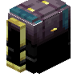

◆
莱特兰-背包 L2Backpack
共 49 个条目 · l2backpack
版本: 3.1.5 · 来源: l2backpack-3.1.5.jar
Backpacks
MC百科中文名: 莱特兰-背包
MC百科页面: https://www.mcmod.cn/class/7082.html（莱特兰-背包 (L2 Backpack)）
官方介绍 （Modrinth · 中文版由 GLM AI 翻译，仅供参考）
L2Backpack
Discord：https://discord.gg/BCHNhsDMXz
前置模组：L2Library
（可选兼容）本模组支持 Modular Golems：人形傀儡可以使用本模组的箭袋，但请确保 Modular Golems 版本不低于 1.7.3
内容
背包
展开
一个简单的背包，与各类背包模组中的背包类似。你可以给它们染色，不用悬停查看就能把它们区分开。它还支持快捷访问，这是它与大多数其他背包模组的差异所在。初始有 9 个格子，可在锻造台中用末影口袋升级，最多可达 54 格（大箱子容量）。 ### 特性 - **wearable**（可穿戴）：可装备在 Curios 的胸部槽位或背部槽位，并通过按键打开（默认：B） - **quick-access**（快捷访问，受限）：拿在右手中时可直接打开，或在部分物品栏界面中直接右键点击该物品打开。支持的界面：玩家物品栏、末影箱、次元存储 - **quick-dump**（快速倾倒）：Shift+右键点击箱子等方块容器，可将背包内的所有物品倒入其中 - **quick-load**（快速装载）：Shift+左键点击方块容器，可尽可能多地从中取出物品 - **container-item**（容器物品）：按原版定义，这是一个容器物品，也就是说它不能被放进另一个容器物品（如潜影盒）中。该特性能防止可能导致服务器崩溃、区块损坏的 NBT 溢出末影背包
展开
一个便携式末影箱，没什么特别的。 ### 特性 - **wearable**（可穿戴）：可装备在 Curios 的胸部槽位或背部槽位，并通过按键打开（默认：B） - **quick-access**（快捷访问，完全）：拿在右手中时可直接打开，或在任何物品栏界面中直接右键点击该物品打开 - **off-loaded**（数据外置）：它不是容器物品，所以你既可以把其他背包放进去，也可以把它放进背包里。数据存储在玩家身上次元存储
展开
一种将物品存放在末地维度的背包。次元存储必须绑定到一名玩家才能使用；绑定到同一玩家且颜色相同的多个次元存储，会连接到同一个存储空间。绑定之后，所有者可以把它交给别人，允许其他玩家访问该存储空间。注意：每名玩家只有 16 个存储空间，每种颜色对应一个。 这个物品也可以放置在地面上，此时它就成为一个跨维度物品传送箱，类似于 Ender Storage。这个箱子能帮你把物品从一个工厂传送到另一个工厂，但不会加载区块。 ### 特性 - **wearable**（可穿戴）：可装备在 Curios 的胸部槽位或背部槽位，并通过按键打开（默认：B） - **quick-access**（快捷访问，完全）：拿在右手中时可直接打开，或在任何物品栏界面中直接右键点击该物品打开 - **off-loaded**（数据外置）：它不是容器物品，所以你既可以把其他背包放进去，也可以把它放进背包里。数据存储在世界中 - **placeable**（可放置）：这个物品可以放置为方块。放置方法：Shift+右键护甲袋 / 书袋
展开
一种最多能装 64 件不可堆叠物品的收纳袋。护甲袋存放有耐久度的物品，书袋存放附魔书。这是一种临时存储空间：没有 GUI。手持它右键点击，即可把所有匹配的物品收进袋中；Shift+右键点击，则把袋里的东西全部倒出来。 这些袋子只在 RPG 整合包里能派上大用场——那种你会捡到大量装备或附魔书、物品栏很快就被塞满的场景。它们可以帮你在回家整理之前，先把东西存放到某处。为确保不会拿走你的护甲/武器，它只收集物品栏中的物品，不会动快捷栏和护甲槽位。 ### 特性 - **quick-dump**（快速倾倒）：Shift+右键点击箱子等方块容器，可将袋内所有物品倒入其中 - **quick-load**（快速装载）：Shift+左键点击方块容器，可尽可能多地从中取出物品 - **quick-collect**（快速收集）：右键点击，收集物品栏中所有匹配的物品（快捷栏除外） - **quick-extract**（快速取出）：Shift+右键点击，倒出袋中的所有物品箭袋
展开
一种独特的背包：只要手持弓，就能在 9 个候选箭矢中预览、选择并射击。这项功能让玩家无需切换物品或打开物品栏，就能快速选好要射的箭。箭袋只有 9 格，且无法升级。使用时，把它放进副手，或 Curios 的胸部/背部槽位。手持弓时，玩家可以看到箭袋中的所有箭矢、当前选中的那一支，以及该箭矢是否为当前弓所接受。按 Shift+数字键选中箭矢，或按上/下方向键（可配置）切换箭矢。 ### 特性 - **wearable**（可穿戴）：可装备在 Curios 的胸部槽位或背部槽位，并通过按键打开（默认：B） - **quick-access**（快捷访问，受限）：拿在右手中时可直接打开，或在部分物品栏界面中直接右键点击该物品打开。支持的界面：玩家物品栏、末影箱、次元存储 - **quick-dump**（快速倾倒）：Shift+右键点击箱子等方块容器，可将背包内的所有物品倒入其中 - **quick-load**（快速装载）：Shift+左键点击方块容器，可尽可能多地从中取出物品 - **container-item**（容器物品）：按原版定义，这是一个容器物品，也就是说它不能被放进另一个容器物品（如潜影盒）中。该特性能防止可能导致服务器崩溃、区块损坏的 NBT 溢出工具切换 / 护甲切换 / 组合切换
展开
与箭袋类似，这些切换器让你无需打开任何 GUI，就能在 9 个候选中预览、选择并替换工具/护甲。这项功能让玩家无需打开物品栏，就能在挖矿/赶路/战斗装备之间快速切换。手持工具时，玩家会看到工具切换器中的所有工具。按 Shift+数字键选中工具，或按上/下方向键（可配置）选择，然后按回车键，即可将选中的工具与手中的工具互换。对于护甲，主手为空时会打开护甲列表。 组合切换是箭袋、工具切换与护甲切换的合体版本，手持对应物品即可触发相应功能。你也可以按 Alt 键（可配置），在空手时显示工具列表。 末影切换将组合切换与末影背包合二为一，可省下一个背包槽位。不过切换列表中的物品仍存储在物品本身上，而不是末影箱物品栏里。 ### 特性 - **wearable**（可穿戴）：可装备在 Curios 的胸部槽位或背部槽位，并通过按键打开（默认：B） - **quick-access**（快捷访问，受限）：拿在右手中时可直接打开，或在部分物品栏界面中直接右键点击该物品打开。支持的界面：玩家物品栏、末影箱、次元存储 - **quick-dump**（快速倾倒）：Shift+右键点击箱子等方块容器，可将背包内的所有物品倒入其中 - **quick-load**（快速装载）：Shift+左键点击方块容器，可尽可能多地从中取出物品 - **container-item**（容器物品）：按原版定义，这是一个容器物品，也就是说它不能被放进另一个容器物品（如潜影盒）中。该特性能防止可能导致服务器崩溃、区块损坏的 NBT 溢出便携抽屉
展开
类似于抽屉模组中的抽屉，唯一的区别是它是便携的！它只能存放一种物品，且该物品不能带有任何 NBT，但最多可存 64 组。它无法放置在地面上，玩家只能通过物品栏访问。 存入物品：在任何 GUI 中，手持想存的物品左键点击抽屉即可。取出物品：在任何 GUI 中，右键点击抽屉即可取出一组。它还支持快速倾倒与快速装载，如果安装了抽屉模组，你就能在抽屉方块之间快速转运物品。它同样支持快速收集与快速取出，方便你清空物品栏里的圆石，或在需要时迅速取出一组。 ### 特性 - **quick-dump**（快速倾倒）：Shift+右键点击箱子等方块容器，可将抽屉内的所有物品倒入其中 - **quick-load**（快速装载）：Shift+左键点击方块容器，可尽可能多地从中取出物品 - **quick-collect**（快速收集）：右键点击，收集物品栏中所有匹配的物品（包括快捷栏）。当抽屉为空时，会收集物品栏中数量最多的那种物品 - **quick-extract**（快速取出）：Shift+右键点击，从抽屉中倒出一组物品末影抽屉
展开
一种便携抽屉，但物品存放于末地维度。你可以像使用普通便携抽屉一样访问它，但它没有快速倾倒与快速装载功能。取而代之，它可以放置为方块，充当跨维度物品传送站。使用时，先用某个物品左键点击它来设置绑定，即使它当前并不包含该物品，也会绑定过去。 与次元存储类似，它也必须绑定到一名玩家才能生效。绑定到同一玩家且设置为相同物品的末影抽屉，会连接到同一个存储空间。但比次元存储更棒的是，玩家可以拥有任意多个末影抽屉空间，每种物品各占一个。这在自动化生产线中非常强大 对于末影抽屉方块，右键点击即可存入或取出物品。如需批量存取，请用便携抽屉进行快速倾倒或快速装载 ### 特性 - **quick-collect**（快速收集）：右键点击，收集物品栏中所有匹配的物品（包括快捷栏）。当抽屉为空时，会收集物品栏中数量最多的那种物品 - **quick-extract**（快速取出）：Shift+右键点击，从抽屉中倒出一组物品 - **placeable**（可放置）：这个物品可以放置为方块。放置方法：Shift+右键
由 GLM AI 翻译，仅供参考
查看英文原文（Modrinth）
L2Backpack
Discord: https://discord.gg/BCHNhsDMXz
Dependency: L2Library
(Optional Compatilibity) It supports Modular Golems in the way that humanoid golems can use quivers from this mod, but you need to make sure Modular Golem version is at least 1.7.3
Contents
Backpack
Expand
A simple backpack similar to backpacks in every backpack mod. You can color them to tell them apart from each other without hovering them. It has quick access support that differentiates itself from most other backpack mods. It has 9 slots at the beginning, and can be upgraded in smithing table using ender pocket, up to 54 slots (large chest). ### Features - **wearable**: They can be worn in chest slot or back slot of Curios, and opened with a key bind (default: B) - **quick-access**(limited): They can be opened in right hand, or in some inventories directly by right clicking this item in GUI. Supported inventories: player inventory, ender chest, dimensional storage. - **quick-dump**: You can dump all items in this backpack into block containers, such as chests, by shift-right clicking the container block. - **quick-load**: You can extract as much items as possible from a block container, by shift-LEFT clicking the container block. - **container-item**: This is a container item in vanilla definition. This means that it cannot exist in another container item, such as shulker box. This feature prevents NBT-overflow that can crash server and corrupt chunks.Ender Backpack
Expand
A portable ender chest. Nothing special. ### Features - **wearable**: They can be worn in chest slot or back slot of Curios, and opened with a key bind (default: B) - **quick-access**(full): They can be opened in right hand, or in any inventory directly by right clicking this item in GUI. - **off-loaded**: This is not a container item, so you can put backpacks in it and put it in backpacks. The data is stored on player.Dimensional Storage
Expand
A backpack that stores item in the end dimension. Dimensional Storage must be bind to a player to use, and the ones that bind to the same player and have the same color will bind to the same storage space. Once it's bound to a player, the owner can give it to others to allow other players to access this storage space. But note: one player only have 16 storage spaces, each corresponds to a color. This item can also be placed on ground. Then it acts as a cross-dimensional item teleport chest, similar to Ender Storage. This chest can help you to teleport items from one factory to another, but it does not load the chunk. ### Features - **wearable**: They can be worn in chest slot or back slot of Curios, and opened with a key bind (default: B) - **quick-access**(full): They can be opened in right hand, or in any inventory directly by right clicking this item in GUI. - **off-loaded**: This is not a container item, so you can put backpacks in it and put it in backpacks. The data is stored in the world. - **placeable**: This item can be placed down as a block. To place it, do shift+right click.Armor Bag / Book Bag
Expand
A bag that stores up to 64 unstackable items. Armor bag stores items with durability, and book bag stores enchanted books. This is a temporary storage space: It does not have a GUI. Instead, player right click with it to collect all matching items into this bag, and shift-right click with it to pour every out. These bags are useful only in RPG modpacks where you can get a lot of loots of equipments or enchanted books. They fills the inventory very quickly. These bags can help you to store them somewhere before you go back to home and sort them. To make sure it does not take your armor / weapon away, it only collect items in your inventory, not the hotbar or armor slots. ### Features - **quick-dump**: You can dump all items in this bag into block containers, such as chests, by shift-right clicking the container block. - **quick-load**: You can extract as much items as possible from a block container, by shift-LEFT clicking the container block. - **quick-collect**: Right click to collect all matching items from your inventory except the hotbar - **quick-extract**: Shift-right click to pour out all items from the bagQuiver
Expand
A unique backpack that allows you to preview, select, and shoot arrows from 9 candidates all while holding a bow. This feature allows players to quickly select arrows to shoot without switching items or open inventory. Quiver has 9 slot only and cannot be upgraded. To use it, put it in offhand, chest slot, or back slot of Curios. When holding a bow, player will see all arrows in the Quiver, the currently selected one, and whether this arrow is acceptable by the bow. Press shift+number key to select arrow, or up/down keys (configurable) to switch arrows. ### Features - **wearable**: They can be worn in chest slot or back slot of Curios, and opened with a key bind (default: B) - **quick-access**(limited): They can be opened in right hand, or in some inventories directly by right clicking this item in GUI. Supported inventories: player inventory, ender chest, dimensional storage. - **quick-dump**: You can dump all items in this backpack into block containers, such as chests, by shift-right clicking the container block. - **quick-load**: You can extract as much items as possible from a block container, by shift-LEFT clicking the container block. - **container-item**: This is a container item in vanilla definition. This means that it cannot exist in another container item, such as shulker box. This feature prevents NBT-overflow that can crash server and corrupt chunks.Tool Swap / Armor Swap / Combined Swap
Expand
Similar to quiver, these swaps allow you to preview, select, swap tools/armors from 9 candidates without opening any GUI. This feature allows players to quickly switch between mining/travel/battle gears without open inventory. When holding a tool, player will see all tools in the tool swap. Press shift+number key to select tool, or up/down keys (configurable) to select. Then press return to swap the select tool with the tool in hand. For armors, having an empty main hand opens the list for armor. Combined Swap is the combined version of quiver, tool swap, and armor swap. Holding corresponding items to trigger each of them. You can also press alt (configurable) to show the tool list when holding nothing. Ender Swap combines combined swap and ender backpack, saving one backpack slot. Though the items is swap are still stored on the item, not the ender chest inventory. ### Features - **wearable**: They can be worn in chest slot or back slot of Curios, and opened with a key bind (default: B) - **quick-access**(limited): They can be opened in right hand, or in some inventories directly by right clicking this item in GUI. Supported inventories: player inventory, ender chest, dimensional storage. - **quick-dump**: You can dump all items in this backpack into block containers, such as chests, by shift-right clicking the container block. - **quick-load**: You can extract as much items as possible from a block container, by shift-LEFT clicking the container block. - **container-item**: This is a container item in vanilla definition. This means that it cannot exist in another container item, such as shulker box. This feature prevents NBT-overflow that can crash server and corrupt chunks.Portable Drawers
Expand
Similar to the drawers in drawer mod. The only difference is that it is portable! It can only store one kind of item and the item must not have any NBT, but can store up to 64 stacks. It cannot be placed down, and player can access it through inventory. To put items in, in any GUI, left click the drawer with the item you want to store in. To take items out, in any GUI, right click it to take out a stack. This also support quick-dump and quick-load, so you can fast transport items from one drawer block to another, if you have drawer mod installed. This also support quick-collect and quick-extract, so you can clear cobblestones in your inventory or take out a stack quickly when you need. ### Features - **quick-dump**: You can dump all items in this backpack into block containers, such as chests, by shift-right clicking the container block. - **quick-load**: You can extract as much items as possible from a block container, by shift-LEFT clicking the container block. - **quick-collect**: Right click to collect all matching items from your inventory including the hotbar. When it has no item, it will collect the kind of item that has the largest count in your inventory. - **quick-extract**: Shift-right click to pour out one stack of items from the drawerEnder Drawers
Expand
A portable drawer, but store items in the end dimension. You can access it as if it is a simple portable drawer, but it does not have the quick dump and quick load feature. Instead, it can be placed down as a block, and act as a cross-dimensional item teleport station. To use it, first left click it with an item to set its binding. It will bind to the item even it contains none. Similar to dimensional storage, it has to be bind to a player to be functional. ender drawers that binds to the same player and set with the same item will be bind to the same storage space. But better than dimensional storage, player can have as many ender drawer space as they want, one for each kind of item. This is very powerful in automated production lines For ender drawer block, right click to store items or take items out. To bulk store / take, use portable drawer to quick-dump or quick-load ### Features - **quick-collect**: Right click to collect all matching items from your inventory including the hotbar. When it has no item, it will collect the kind of item that has the largest count in your inventory. - **quick-extract**: Shift-right click to pour out one stack of items from the drawer - **placeable**: This item can be placed down as a block. To place it, do shift+right click
资料来源：L2 Backpack
物品与方块
 装备袋
装备袋l2backpack:armor_bag · 物品
 护甲切换袋
护甲切换袋l2backpack:armor_swap · 物品
l2backpack:arrow_bag · 物品?黑色背包
l2backpack:backpack_black · 物品?蓝色背包
l2backpack:backpack_blue · 物品?棕色背包
l2backpack:backpack_brown · 物品?青色背包
l2backpack:backpack_cyan · 物品?灰色背包
l2backpack:backpack_gray · 物品?绿色背包
l2backpack:backpack_green · 物品?淡蓝色背包
l2backpack:backpack_light_blue · 物品?淡灰色背包
l2backpack:backpack_light_gray · 物品?黄绿色背包
l2backpack:backpack_lime · 物品?品红色背包
l2backpack:backpack_magenta · 物品?橙色背包
l2backpack:backpack_orange · 物品?粉红色背包
l2backpack:backpack_pink · 物品?紫色背包
l2backpack:backpack_purple · 物品?红色背包
l2backpack:backpack_red · 物品?白色背包
l2backpack:backpack_white · 物品?黄色背包
l2backpack:backpack_yellow · 物品
 附魔书袋
附魔书袋l2backpack:book_bag · 物品
 销毁模式配置器
销毁模式配置器l2backpack:destroy_tweaker_tool · 物品

空间箱子l2backpack:dimensional_storage · 方块?黑色空间背包
l2backpack:dimensional_storage_black · 物品?蓝色空间背包
l2backpack:dimensional_storage_blue · 物品?棕色空间背包
l2backpack:dimensional_storage_brown · 物品?青色空间背包
l2backpack:dimensional_storage_cyan · 物品?灰色空间背包
l2backpack:dimensional_storage_gray · 物品?绿色空间背包
l2backpack:dimensional_storage_green · 物品?淡蓝色空间背包
l2backpack:dimensional_storage_light_blue · 物品?淡灰色空间背包
l2backpack:dimensional_storage_light_gray · 物品?黄绿色空间背包
l2backpack:dimensional_storage_lime · 物品?品红色空间背包
l2backpack:dimensional_storage_magenta · 物品?橙色空间背包
l2backpack:dimensional_storage_orange · 物品?粉红色空间背包
l2backpack:dimensional_storage_pink · 物品?紫色空间背包
l2backpack:dimensional_storage_purple · 物品?红色空间背包
l2backpack:dimensional_storage_red · 物品?白色空间背包
l2backpack:dimensional_storage_white · 物品?黄色空间背包
l2backpack:dimensional_storage_yellow · 物品
 水晶匣子
水晶匣子l2backpack:drawer · 方块?末影背包
l2backpack:ender_backpack · 物品
 末影匣子
末影匣子l2backpack:ender_drawer · 方块
 空间升级组件
空间升级组件l2backpack:ender_pocket · 物品
 宝石袋
宝石袋l2backpack:gem_bag · 物品
 副手切换带
副手切换带l2backpack:hand_swap · 物品
 归类模式配置器
归类模式配置器l2backpack:pickup_tweaker_tool · 物品
 药水袋
药水袋l2backpack:potion_bag · 物品
 卷轴袋
卷轴袋l2backpack:scroll_bag · 物品
 套装切换袋
套装切换袋l2backpack:suit_swap · 物品
 工具切换袋
工具切换袋l2backpack:tool_swap · 物品